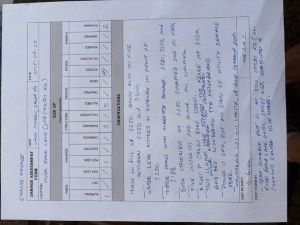

151, KI7DGC, VARA FM, W7YAM-12, 145.090, LAKE OSWEGO, CLACKAMAS, OREGON

Original image size: 569 x 532 pixels, 96 dpi, 108.8 kbytes
Your teammates' exercise material is below. You should see their CERT Form #1. Each AUXC who submitted an image should have at least one thumbnail. Click on the thumbnail to see the original image.
Use the browser's back button to return to this page from the full-sized image.
If you are interested why there is quite a range of colour across the submitted images: check out my explanation in my check-in below.
Those of you who used the non-standard Winlink CERT form 1 - I have included your form content as rendered in a Winlink Express plain text message. I appreciate that you took the time to find this form, but be aware of two important things:
Your exercise requirements this week were to:
Note that if an AUXC checked in through multiple RMSs, then each check-in sentence is provided at the top of their information.
Jump to a specific AUXC's check-in material:
151, KI7DGC, VARA FM, W7YAM-12, 145.090, LAKE OSWEGO, CLACKAMAS, OREGON
Original image size: 569 x 532 pixels, 96 dpi, 108.8 kbytes
151, K7QQB, VARA FM, W7OWO-10, 145.030, AURORA, CLACKAMAS, OREGON
Original image size: 782 x 601 pixels, 96 dpi, 99.9 kbytes
151, KD7ISA, Telnet, 0.000, Hillsboro, Washington, Oregon
CERT Damage Assessment
CERT: Lake Oswego
DATE: 2025-9-15
LOCATION: Palisades Neighborhood - East ICP - Palisades School
This is a DRILL - no genuine emergency exists.
SIZE UP (Enter "X" where applicable. For structure damage enter "H"=heavy, "M"=moderate or "L"=light. For people and animals enter numbers)
FIRES BURNINGFIRES OUTHAZARD GAS LEAKH20 LEAKELECTRICALCHEMICALSTRUCTURE DAMAGEDCOLLAPSEDPEOPLE INJUREDTRAPPEDDEADROADS ACCESSNO ACCESSANIMALS INJUREDTRAPPEDROAMING
351010H2110004000
OBSERVATIONS: 151, KD7ISA, Telnet, internet, 0.000, Hillsboro, Washington, Oregon
* Structures damaged = 17 (WLE form will only take 1 digit). Burning houses at 999 Hoffer Court, 107A Greentree RD, 207 Livinggood Lane.
Gas leak at Greentree Pool, NW Natural arrived on scene at 2315. Electric arcing from in-ground transformer at/near 371 Woodland Terrace. 17 damaged structures on high ground / Northwest slope from Crestview down to South Shore Blvd (Heavy:9, Light:8) 2 properties (family homes) at Wall St and Crestview collapsed by fallen trees. All injuries are Green. Treatment Centre: Palisades School. One Nurse-Practioneron site. Need sterile dressings and PPE.
CERT MEMBER: G. Greene
151, KI7FCG, PACKET, K7YVO-10, 144.930, BORING, CLACKAMAS, OR

Original image size: 694 x 518 pixels, 96 dpi, 51.9 kbytes
151, KI7BDP, VARA FM, KD7ZDO-11, 145.770, OREGON CITY, CLACKAMAS, OR
***THIS IS AN EXERCISE***
SEE ATTACHED CERT FORM #1 FROM G. GREENE.
GAFFNEY LANE NEIGHBOURHOOD, CLAIRMONT MOBILE HOME PARK SURVEY
SUMMARY:
3 ACTIVE STUCTURE FIRES, 7 OUT.
1 WATER LEAK/BROKEN PIPE
15 DAMAGED STRUCTURES (MOBILE HOMES), 1 COLLAPSED
11 GREEN LEVEL INJURIES, 2 NEED TRANSPORT DUE TO MOBILITY ISSUES
Original image size: 853 x 640 pixels, 72 dpi, 71.7 kbytes
151, W6RKT, VARA FM, K7LSC-10, 144.960, Battle Ground, Clark, WA
Original image size: 1133 x 886 pixels, 96 dpi, 114.9 kbytes
151, KD7PFH, Telnet, N/A, 0.000, Lake Oswego, Clackamas, OR

Original image size: 640 x 448 pixels, 96 dpi, 46.3 kbytes
151, KJ7JCR, VARA FM, W7BVT-10, 145.020, Lake Oswego, Clackamas, Oregon

Original image size: 798 x 598 pixels, 96dpi, 68.3 kbytes
151, KF7KXX, VARA FM, KD7ZDO-11, 145.770, Lake Oswego, Clackamas, Oregon
Original image size: 672 x 504 pixels, 96 dpi, 87.8 kbytes
151, KD7DNM, VARA FM, W7YAM-12, 145.090, Lake Oswego, Clackamas, OR
See attached Damage Assessment form for River Bend Lane, Lake Oswego. The form says the Llamas had escaped when the fence collapsed. They have be recaptured by the owners.
Original image size: 480 x 640 pixels, 96 dpi, 46.1 kbytes
151, KE7WNB, VARA FM, N7OGM-10, 145.050, Milwaukie, Clackamas, Oregon
Original image size: 825 x 637 pixels, 75 dpi, 59.2 kbytes
151, AI7XM, Telnet, N/A, 0.000, Lake Oswego, Clackamas
Original image size: 320 x 240 pixels, 72 dpi, 39.4 kbytes
151, WA6ZLV, VARA FM, N1ACW-10, 145.530, Lake Oswego, Clackamas, Oregon
Original image size: 684 x 513 pixels, 96 dpi, 97.6 kbytes
151, KI7MDE, Vara FM, N1ACW-10, 145.530, Tualatin, Clackamas, OR

Original image size: 1259 x 910 pixels, 72 dpi, 99.4 kbytes
151, KK7MLS, VARA FM, K7CPU-10, 441.075, LAKE OSWEGO, CLACKAMAS, OREGON
CERT Damage Assessment
CERT: Oak Creek Neighborhood, LO
DATE: 2025-9-22 17:56
LOCATION: *** THIS IS AN EXERCISE ***
Oak Creek School, 55 Kingsgate Road, Lake Oswego, OR 97035
45.4272, -122.7295
SIZE UP (Enter "X" where applicable. For structure damage enter "H"=heavy, "M"=moderate or "L"=light. For people and animals enter numbers)
FIRES BURNING FIRES OUT HAZARD GAS LEAK H20 LEAK ELECTRICAL CHEMICAL STRUCTURE DAMAGED COLLAPSED PEOPLE INJURED TRAPPED DEAD ROADS ACCESS NO ACCESS ANIMALS INJURED TRAPPED ROAMING
2 3 2 1 0 0 2 0 25 0 0 1 2 0 0 0
OBSERVATIONS: 151, KK7MLS, VARA FM, K7CPU-10, 441.075, LAKE OSWEGO, CLACKAMAS, OREGON
GALEN PARK ESTATES:
BURNING: Two personal residences, 4979 Galen Street, and 13010 Princeton Court
GAS LEAK: Two personal residences, 4951 Galen Street, and 13166 Peters Road
H2O LEAK: Fire Hydrant at 4978 Harvard Court.
STRUCTURE DAMAGE: (H) 13095 Princeton Court, and (M) 13090 Princeton Court
PEOPLE INJURED: 5 Red, 10 Yellow, 10 Green, located at Oak Creek School. DNP requires additional PPE and sterile dressings
ROADS ACCESS: Use Kerr Parkway > Botticelli and Fosberg Road feeds to Melrose and either of Kingsgate Road and Peters Road North to Galen Park Estates.
ROADS NO ACCESS: (i) SW Douglas Street feed and Kerr Parkway to Jefferson Parkway and (ii) Westlake Drive feed to Melrose Street.
ANIMALS: No injuries noted. However, it appears that there is a greater number of dogs and cats roaming than normal.
*** THIS IS AN EXERCISE ***
CERT MEMBER: G. Greene
151, KK7ZTC, VARA FM, KD7ZDO-11, 145.700, Lake Oswego, Clackamas, Oregon
(Check-in sentence not submitted. The above was pieced together from CMS traffic)
CERT Damage Assessment
CERT: LAKE OSWEGO
DATE: 2025-09-22
LOCATION:
ROSEWOOD NEIGHBORHOOD - ICP RIVER GROVE ELEMENTARY SCHOOL
SIZE UP (Enter "X" where applicable. For structure damage enter "H"=heavy, "M"=moderate or "L"=light. For people and animals enter numbers)
FIRES BURNING FIRES OUT HAZARD GAS LEAK H20 LEAK ELECTRICAL CHEMICAL STRUCTURE DAMAGED COLLAPSED PEOPLE INJURED TRAPPED DEAD ROADS ACCESS NO ACCESS ANIMALS INJURED TRAPPED ROAMING
2 3 1 - 1 - 1 - 3 - - - 1 - - -
OBSERVATIONS: THIS IS AN EXERCISE.
BURNING HOUSES AT: 19123 BENFIELD AVE; 18597 KRISTI WAY.
GAS LEAK AT: 17592 DAWN ST - STRONG GAS ODOR, CORDONED OFF.
ELECTRIC: POWER POLE DOWN ACROSS LONGFELLOW AVE AT DAWN ST - (LIVE WIRES)
STRUCTURE: 11625 FERNBROOK WAY - HOUSE SHIFTED OFF FOUNDATION
INJURED: 2 ADULTS, 1 CHILD, 16993 DON LEE WAY, APEAR STABLE, INJURED ALL GREEN
NO ACCESS: FLOODED INTERSECTION AT LONGFELLOW AVE AND CHILDS ROAD - IMPASSABLE
COMM NOTES: ALL REGULAR PHONE/CELL/INTERNET IN THIS AREA IS DOWN, CERT IS USING HT'S AND RUNNERS, ALL DANGER AREAS MARKED WITH TAPE AND SIGNAGE PER CERT GUIDELINES.
CERT MEMBER: G. GREENE
KC7TAK, Telnet, N/A, 0.000, Clarkes, Clackamas, Oregon
Original image size: 800 x 600 pixels, 96 dpi, 68.1 kbytes
151, N1ACW, VARA FM, K7LSC-10, 144.960, Lake Oswego, Clackamas, Oregon
151, N1ACW/M, VARA FM, KC7DMF, 144.940, Deschutes NF, Deschutes, Oregon

I scanned the completed CERT Form #1 (click on the image to the right to see the full-sized form) since I knew that this would present the document square to the image capturing device. Scanners typically have a white point that is similar to scanner paper is another plus. Squaring the image for a camera is really, really hard! (especially without getting a shadow of yourself over the image.)
Digital cameras, including the one built-into your cell phone, don't work like the scanner. Cameras pretend that an image is greyscale and they are designed to assume that the average of each pixels' value is a neutral tone This is chosen to be a specific shade of grey (there's more than fifty, BTW) and is known as middle grey or 18% greycard. You could blame Ansel Adams and his Zone system for this but the truth is - cameras are really dumb!
This assumption is good for most images - like urban or country landscapes and even this image of my Mountain Lakes 100 station. What happens when the subject is mostly white, like a form on white paper . Remember that the camera assumes that an image's greyscale equivalent sums to middle grey. The camera senses the image and sets the exposure to accomplish that. White fades to grey due to the underexposure.
Note that the same works in reverse: if an image is mostly black (like a blackboard or the night sky), your camera will overexpose the image because of its middle grey average assumption.
So, why do some images come out light brown? That's all to do with the illumination. Warm lighting will do that. Under fluorescent light, paper will display with a green tinge. Images captured on sunny days, but not directly illuminated by the sun often appear blue. This is because the sky is blue! (not kidding.) See WA6ZLV's image above.
Colours can be messed up if the camera has been set up to expect a certain lighting condition - like tungsten lighting, but taken outdoors.
Don't worry too much about this. Any clearly readable image is a good result. However, if you know how to tweak your camera's settings (increase exposure or set the white point for the artificial lighting, then that's a plus!
Original image size: 612 x 792 pixels, 72 dpi, 96.3 kbytes
{kind=link}
{kind=link}
{kind=link}
{kind=link}
{kind=link}
{kind=link}
{kind=link}
{kind=link}
{kind=link}
{kind=link}